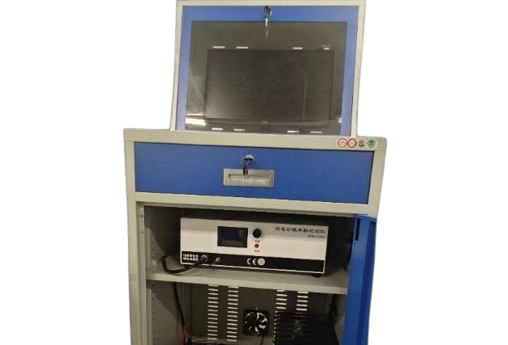

AeroBOT-D4 无人机动力电池测控平台
无人机动力实验室系列电池专业测试设备，集电池数据采集、主动均衡、故障诊断、SOC估算教学科研于一体，模块化设计支持远程测控与循环耐久测试。

产品概述
AeroBOT-D4 属于无人机动力实验室系列产品，专为无人机锂电池教学演示、电池算法科研、动力电池性能验证开发。平台具备多通道同步采集、主动均衡控制、高精度SOC状态估算三大核心能力，整机采用模块化架构，支持实时数据可视化、实验过程全程记录、远程下发控制指令；可完整完成电池组一致性优化、安全故障机理研究、SOC估计算法验证等实验，广泛适配高校新能源、无人机工程专业课堂教学与动力电池相关科创课题研发。
核心功能
电池信息采集功能：同步采集电池总电压、单体电压、充放电电流、电芯温度，搭配高精度隔离采样电路，保障数据精准可靠，为电池状态分析提供完整数据支撑。
电池主动均衡功能：基于能量转移式主动均衡控制，自主调节单体电芯电荷，缓解电池组压差不一致问题，提升电池可用容量与循环寿命，适配均衡控制策略教学研究。
电池故障诊断功能：覆盖过压、欠压、过流、超温、内阻异常多维度故障检测，实时识别电池异常状态，自动存储故障记录，直观展示电池失效机理与安全边界。
电池SOC估算功能：内置安时积分SOC估计算法，实时输出电池荷电状态，支持算法参数自定义调试、多组估算方案对比，满足电池状态估计理论教学与算法验证。
图形化监测与数据分析：可视化上位机界面，实时绘制电压、电流、温度、SOC、均衡状态曲线，支持实验数据导出、历史数据回放，快速生成标准化实验报告。
产品特点
配套专业图形化分析软件，支持实时曲线、数据列表、状态图表多形式数据展示。
可编程自动化循环充放电测试，支持远程任务下发、全程监控、测试数据自动回传。
内嵌多重电池诊断算法，多级故障预警保护逻辑，具备自动安全停机防护机制。
基本配置参数
应用价值
AeroBOT-D4 填补无人机动力电池专项教学测试设备空白，教学场景可直观演示锂电池均衡、SOC估算、热故障等抽象理论知识，降低学生理解门槛；科研场景支持电池算法迭代、电芯耐久循环测试、电池安全失效实验；研发场景可快速验证无人机动力电池PACK设计合理性，提前排查压差、热失控等隐患，降低整机试飞安全风险。
适用场景
高校无人机动力实验室、新能源锂电池专业教学、动力电池SOC算法科研、无人机电池PACK性能测试、电池均衡控制策略研究、锂电池安全故障机理实验、储能与无人机电源系统实训。